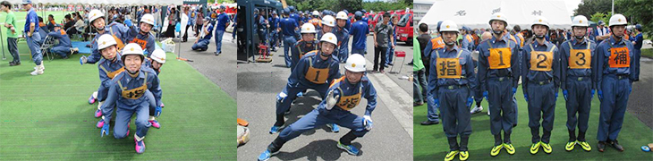
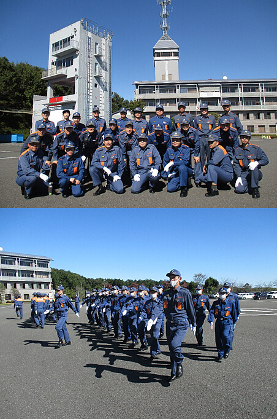
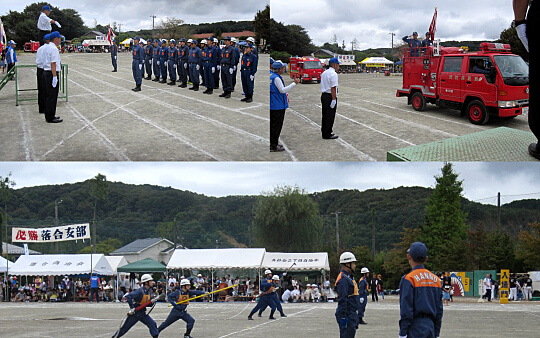
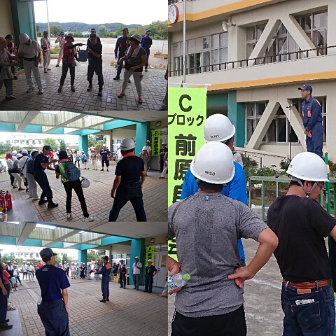
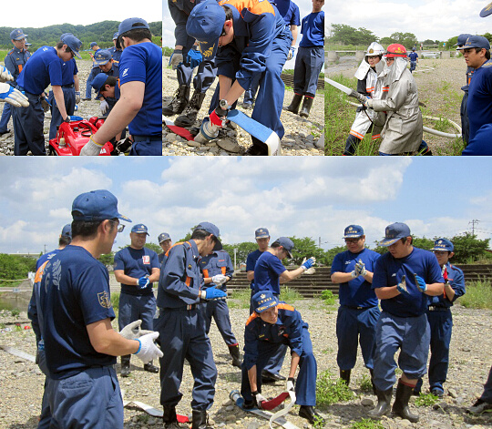

第6分団
| 管轄区域 | 加治地区全域 加治地区全体 大字岩沢、大字笠縫、大字川寺、大字阿須、大字落合、大字前ヶ貫、征矢町、大字矢颪、美杉台一丁目、美杉台二丁目、美杉台三丁目、美杉台四丁目、美杉台五丁目、美杉台六丁目、美杉台七丁目、茜台一丁目 |
| 団員構成 | 分団本部４名 1部（岩沢、笠縫、川寺、阿須）15名 2部（落合、前ケ貫、征矢町、矢颪、美杉台、茜台）14名 |
市の人口の約1/3が暮らしている加治地区の皆様の安全と安心のため、頑張っております。一緒に活動に参加していただける方も随時募集しております。

令和2年度トピックス
◆令和2年10月25日（日）全団員訓練11月28日（土）に行われる特別点検に向け、飯能日高消防署にて全団員訓練を行いました。観閲、服装規律の点検に加え、第6分団は第7分団、第8分団と合同で中隊訓練の練習を行い、点検本番に向け有意義な訓練となりました。

令和元年度トピックス
◆2019年10月6日（日）加治体育祭に参加し操法の展示を行いました。

◆2019年9月8日（日）
加治東地区の防災訓練に参加し、AED、消火器の使い方、バケツリレーの訓練を担当しました。

◆2019年5月19日（日）
6分団1部詰所の前の飯能河原で放水訓練を行いました。吸管の投入、ホースの展張、ポンプの使い方や放水姿勢などを学び、充実した訓練となりました。
